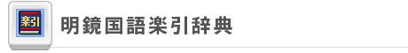

文庫本や辞書などは、一冊一冊は軽くても、一度にたくさん持ち歩くのは大変です。そんな時には、ここで紹介するDSiウェアを導入して、小さく軽いDSiの中に何十冊分ものデータを詰め込み、手軽に読書を楽しめるようにしましょう。
DSiが文庫本に
世界の名作文学をDSiで読むことができるソフトです。収録されているのは、『フランダースの犬』や『小公女』、『ガリバー旅行記』、そして「シャーロック・ホームズ」シリーズの『グロリア・スコット号』といった推理小説など、海外の名作20冊。それに加えて、『こころ』や『銀河鉄道の夜』など、日本文学の名作も5冊入っています。
DSiを縦向きに使い、タッチペンでページをめくる操作感は、まるで文庫本のようです。読書を中断する際は、次回に続きから読書を再開できるように、しおりをはさむ機能もあります。また、作品によっては挿絵も収録されており、読書中に鳴らすBGMを自由に設定したりと、絵や音で作品の世界に没頭することができます。
合計25冊分の本をDSiにコンパクトに詰め込んで、電車の中など外出先のちょっとした時間を読書タイムとして楽しむことができます。
©2007-2009 Nintendo / Genius Sonority Inc.

手書き入力対応でラクラク検索
約70,000語の日本語を収録した国語辞典ソフトです。新語・カタカナ語・専門語といった特殊な言葉も多数収録しています。
辞書をひく際には、ひらがな・カタカナ・英数字を手書きで入力します。漢字も手書き認識できるので、読めない漢字があっても、タッチペンでそのまま書き写すだけで読み方や意味を知ることができて便利です。もちろん、手書き以外にも、50音や英数の入力パネルから文字を入力することが可能です。
一度辞書で引いた単語を登録しておき、あとからまとめて確認できる「しおり」は、国語の学習の際に非常に役立ちます。また、辞典機能以外に、難読漢字や四字熟語など日本語にまつわるさまざまなテーマに基づいた「明鏡DS日本語クイズ」の機能も入っているので、ゲーム感覚で楽しみながら漢字の読み書き学習をすることができるでしょう。
なお、ニンテンドーDSi LLには、この『明鏡国語楽引辞典』が本体にあらかじめ内蔵されています。
©2002-2009, Kitahara Yasuo & Taishukan
©2006-2009 Nintendo